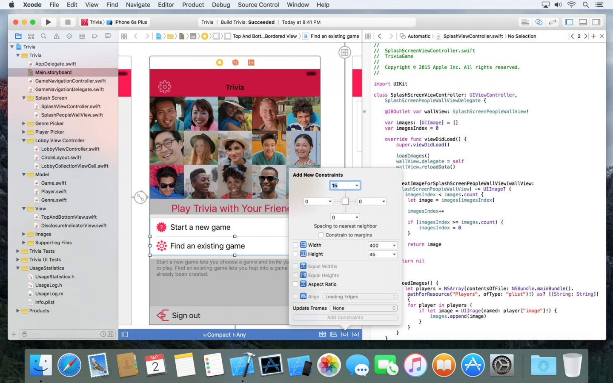
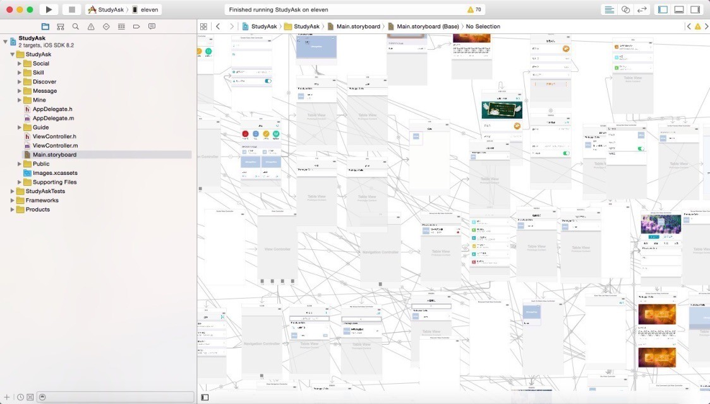
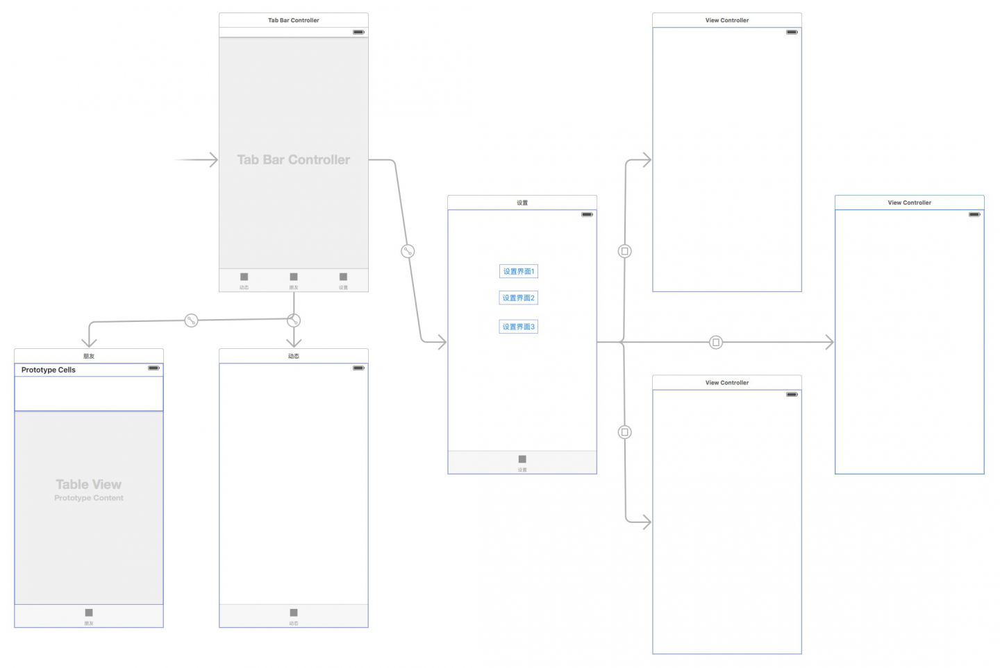
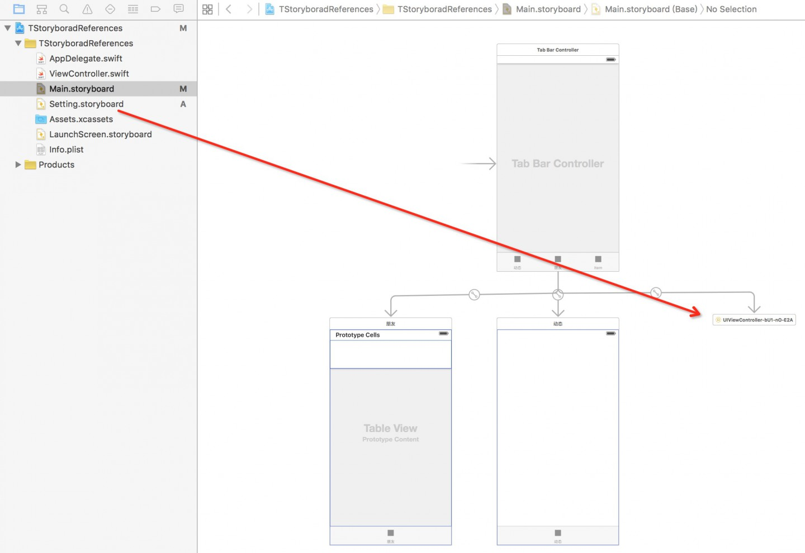
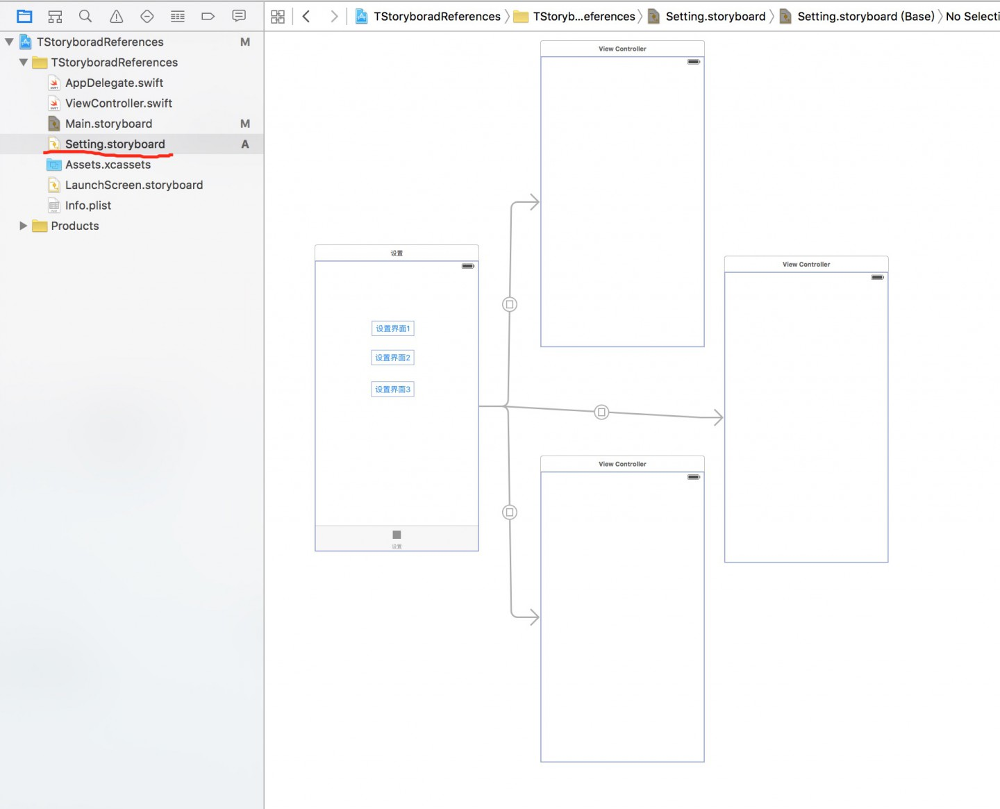
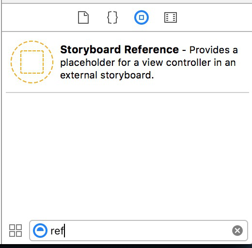
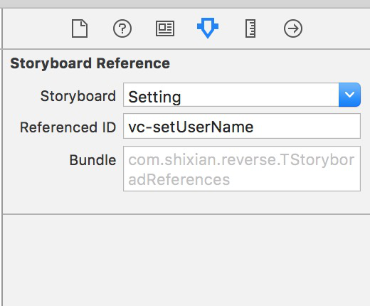
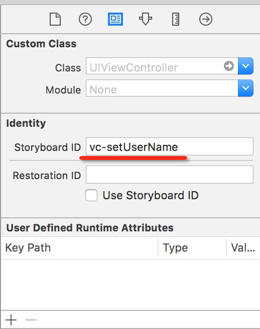

其实官方给的是 Storyboard References 翻译成 Storyboard引用 更加恰当，不过说 Storyboard拆分 好像更加正中要害？过过过过··这些都不重要~
不得不承认，以前我是抵制Storyboard的，原因是xib留下的坏印象-难以合并、看diff时难以理解、某些地方灵活欠佳、升级Xcode经常出现问题、不够Geek...
不过随着Storyboard和Autolayout兴起后，我也开始尝试用，不得不说，界面定制度不高时，用Storyboard开发确实很酸爽，各种拖拖拖拖让我都快忘记咋写代码了····
Storyboard的显著优势
- storyboard可以描述各种场景之间的过渡，这种过渡被称作"segue",你通过简单的ctrl-dragging就能搞定，减少代码量
- storyboard支持table view的prototype cell，这意味着你可以在storyboard中编辑cell，减少代码量
- 独有的Static Tableview特别适合做设置界面一类的界面，何止是省事，简直就是省事！
- 配合AutoALayout能轻松完成屏幕适配
不过....
理想中的Storyboard

现实里的Storyboard

为了解决此类问题，大伙就开始拆分Storyboard，并用代码链接关系，更有甚者会用类似RBStoryboardLink的库管理。此类解决方案问题也不少，例如比较突出的问题是拆散了Storyboard，让本来很直观的逻辑会在某一下子断掉等~
进入主题
铺垫了这么多，终于可以来说重点了，Xocde7带来了官方的解决方案-Storyboard References！可以让我们可以把原本几个Storyboard文件的逻辑依然链接起来。是不是很爽？XD
来看个Demo
原先的界面结构：

利用Storyboard References 整理后，右边的设置部分被放到了一个独立的Setting.storyboard文件里 
Setting.storyboard里变成了这样 
操作细节没多大好讲，就一个选项菜单: Editor->Refactor to StoryBorad ... 选中你要分离的组件（一个或者多个），选择Refactor to StoryBorad并起个名字，就搞定了。不过实现提醒一下，次过程不可逆，请先确保你的环境有版本管理，便于出问题回滚，或者先找个Demo练练手。
数据迁移
对于以前已经拆分在各个StoryBorad文件里的兄弟们，可以通过添加Storyboard References来链接

把Storyboard References直接拖到工程中，然后Attributes Inspector中设置Storyboard明和说要引用的资源ID

同时，目标资源也设置Referenced ID即可完成链接操作

兼容性
版本必须是iOS9以上，国内的行情，估计过两年能用上~
总结
适当地把不同模块进行拆分，放在不同的story文件中进行管理，便于也减少开发中的冲突。并且拆分不同的模块到各个storyboard文件还能 显著减小单个storyboard体积，加快加载速度等诸多优势。不过目前还处于新出的功能，还有一些不完善，例如引用资源ID得手动设置，不能通过两个 SB之间拖拽动作完成，Segue超过也没法直接在两个SB文件间进行，要先创建Storyboard References再操作，实在还有点Low，不过相信苹果对Xcode的更新力度，不会没想过这些问题。期待下次更新